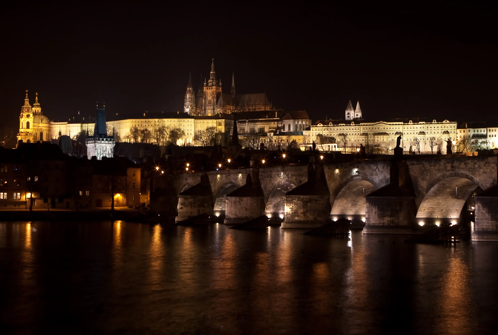
Each venue offers distinct acoustic characteristics suited to different production requirements. All three are available through a single booking process managed by MUSA.
Up to 80 musicians. Full symphony orchestra configurations with dedicated control room.
View DetailsUp to 120 musicians. Large-scale symphonic works in one of Europe's finest concert halls.
View DetailsUp to 55 musicians. Chamber ensembles, string overdubs, and smaller orchestral configurations.
View DetailsA Central European scoring institution with more than eight decades of continuous operation.
Smecky Music Studios — Main Hall
Control Room
Recording Floor
Detail
Detail
Detail
Smecky Music Studios is one of Central Europe's most established and respected scoring stages, with a long-standing reputation across the international recording industry. The main hall offers a warm, balanced acoustic well suited to a wide range of orchestral configurations — from focused chamber sessions to larger ensemble recordings.
Professional-grade control room and an engineering team experienced in international productions. For the majority of MUSA sessions, Smecky serves as the primary recording base.
One of Europe's most acoustically distinguished concert halls and the permanent home of the Czech Philharmonic Orchestra.
Dvořák Hall — Main Stage
Hall Interior
Orchestra Seating
Stage Detail
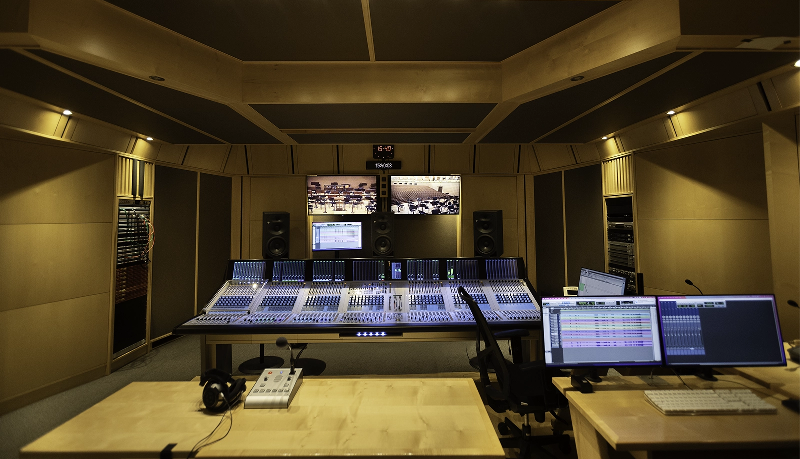
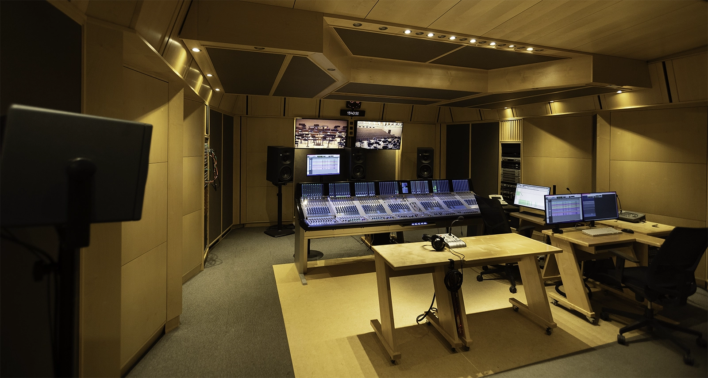
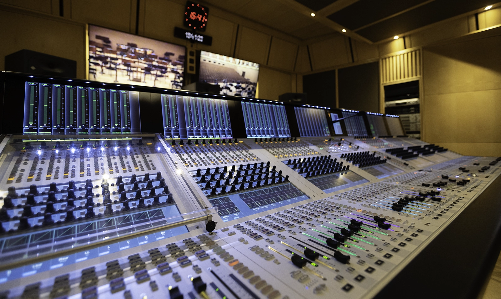
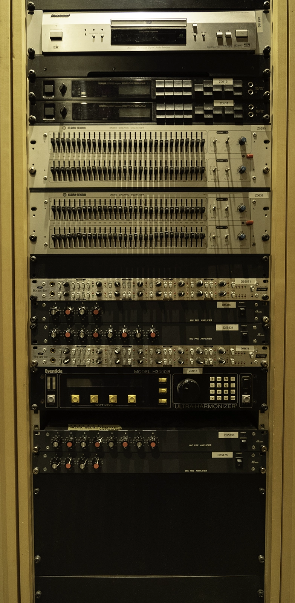

The Dvořák Hall at the Rudolfinum is among Europe's most acoustically distinguished concert halls and the permanent home of the Czech Philharmonic Orchestra. Its natural reverberation and spatial depth make it the preferred choice for large-scale symphonic works, classical albums, and productions where acoustic authenticity is central to the brief.
Sessions are arranged through MUSA and coordinated around the hall's performance schedule.
A broadcast-grade facility well suited to chamber recordings, string overdubs, and smaller orchestral configurations.
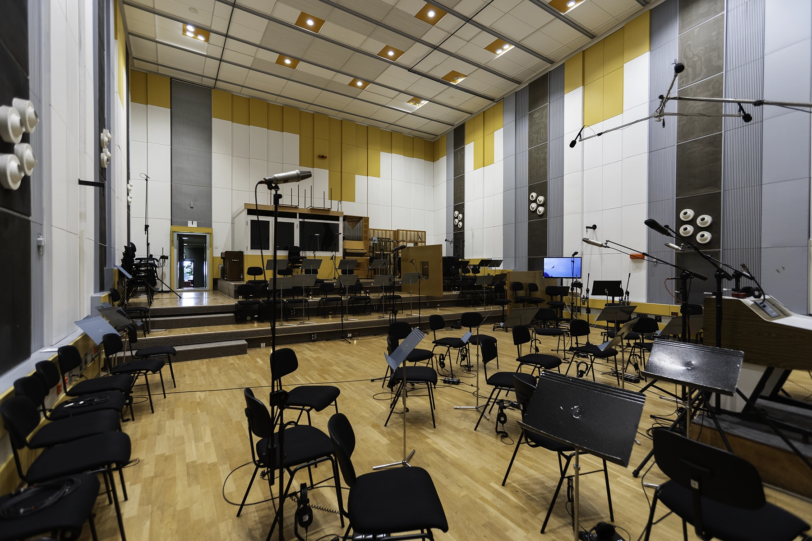
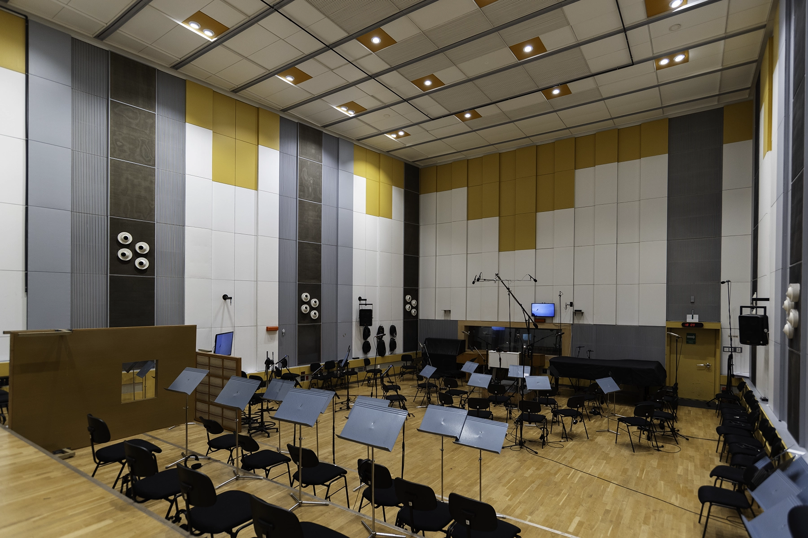
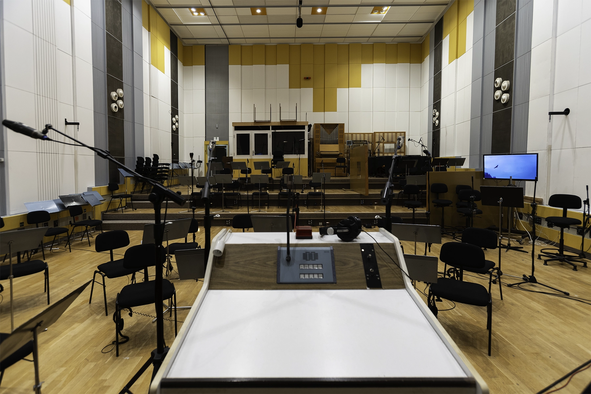
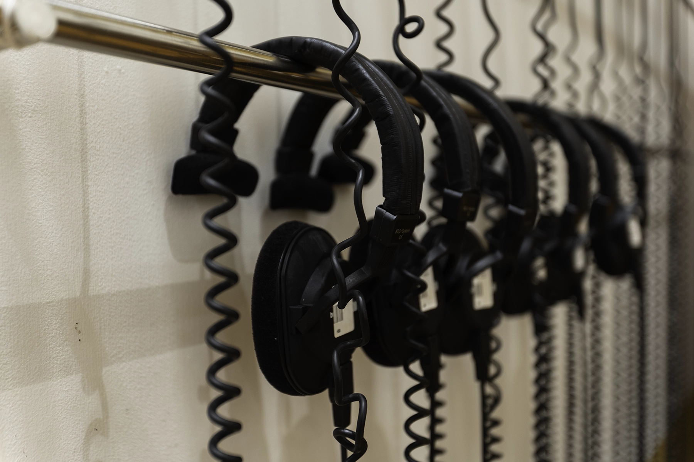
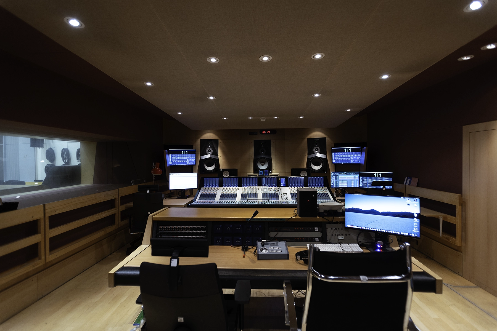
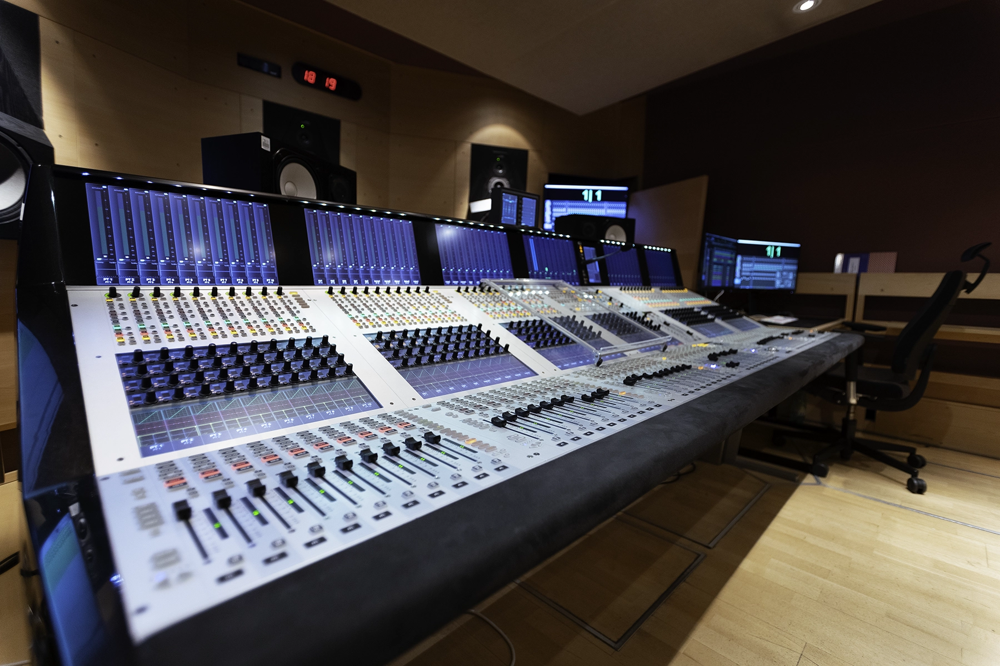
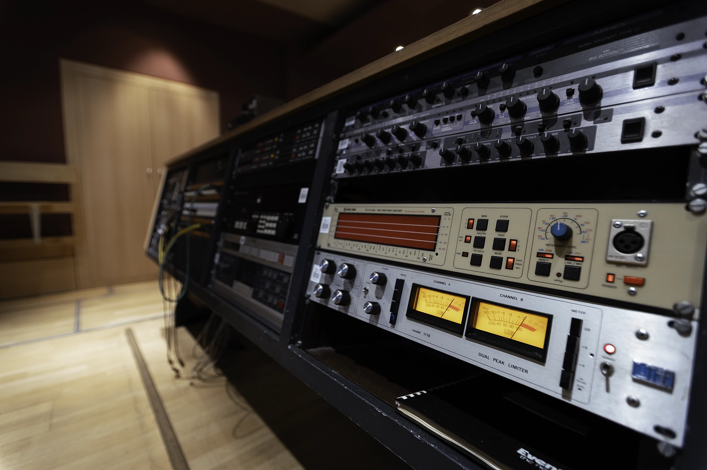
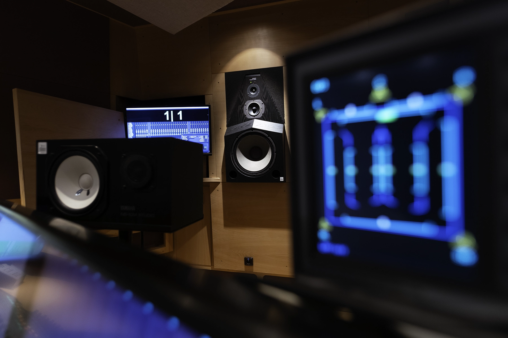
The Music Studios of Czech Television provide a broadcast-grade recording environment suited to chamber ensembles, string overdubs, and smaller orchestral configurations. The controlled acoustic and full technical support make it a reliable choice for focused, smaller-scale sessions.
Available through MUSA as part of a broader production booking.
MUSA recommends the best venue based on your ensemble size, acoustic goals, and budget. Smecky is ideal for most sessions, Rudolfinum for large-scale symphonic works requiring concert-hall acoustics, and Czech TV Studios for focused chamber and overdub sessions. We'll guide you through the options during the quote process.
Yes. Some productions benefit from splitting sessions across venues — for example, recording the full orchestra at Smecky and smaller overdub sessions at Czech TV Studios. We handle all logistics, scheduling, and equipment coordination across locations.
Yes. All three venues are fully equipped for remote direction via Source Live or Audiomovers - Listen To, and real-time talkback. Composers direct sessions daily from Los Angeles, London, Tokyo, and beyond — regardless of venue.
Each venue is equipped with professional recording systems, premium microphone collections, and remote session infrastructure. Detailed technical specification sheets are available on request — contact us during the quote process and we'll provide full equipment lists for your chosen venue.
Typical lead time is 2–6 weeks. Smecky and Czech TV Studios offer more scheduling flexibility, while the Rudolfinum requires coordination around the Czech Philharmonic's performance calendar. The earlier you reach out, the more options we can offer. We've accommodated rush bookings in under two weeks when schedules align.
Tell us about your project and we'll recommend the right venue, ensemble, and timeline — usually within 24 hours.